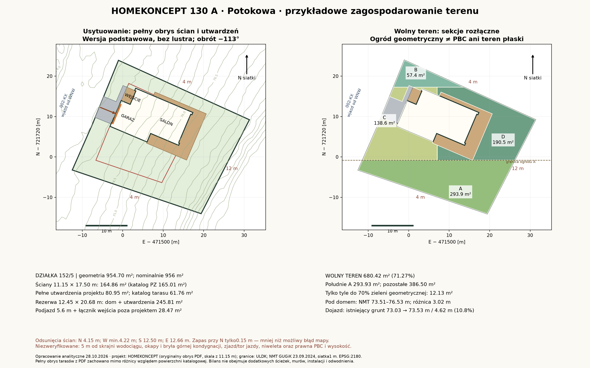

Po odjęciu domu, pełnych tarasów, wejścia i podjazdu.
GDAŃSK · POTOKOWA · 152/5HOMEKONCEPT 130 A.
HOMEKONCEPT 130 A.
Dom na stoku.
Przykładowe zagospodarowanie terenu: wersja podstawowa, bez lustra i bez zmniejszania projektu. Garaż od WNW, salon i główny taras od ESE. Przymiarka sprawdza rzeczywisty obrys ścian, pełne tarasy, wejście i podjazd.
226101_1.0037.152/5Dopasowanie warunkoweŚciany w obwiedni.
Ściany w obwiedni.
Stok wymaga adaptacji.
W przyjętej geometrii zachowano odsunięcia ścian. Nie potwierdzono pasa wodociągu Ø500, prawnego dojazdu, odległości od lasu ani wysokości według MPZP. Wolny teren nie oznacza płaskiego ogrodu.
Zobacz przymiarkę ↓
Poniżej linii E–W przez południowy skraj pełnej rezerwy.
Mało miejsca na dalsze utwardzenia; to nie zatwierdzony bilans PBC.
01
Obrys w rzeczywistej skali
Ściany mają co najmniej 4,15 m od przyjętych granic N/W/S oraz 12,66 m od wschodniego boku. Dom zachowuje skalę; obrót −113° wektora katalogowego oznacza kierunek tylnej elewacji 113° od północy siatki. Nie zastosowano odbicia lustrzanego.
| Granica północna | 4,15 m |
|---|---|
| Granica zachodnia — odcinek północny | 4,22 m |
| Granica zachodnia — odcinek południowy | 4,37 m |
| Granica południowa | 12,50 m |
| Granica wschodnia — przyjęta linia 12 m | 12,66 m |
Odtworzony obrys ścian: 11,15 × 17,50 m. Pełna rezerwa z utwardzeniami: około 12,45 × 20,68 m. Przyjęto 15 cm zapasu do ograniczeń geometrycznych; nie jest to zapas pokrywający niepewność granic lub mapy planu. Brama około 5 m, pas podjazdu 5,6 m. Podjazd i łącznik wejścia poza rezerwą zajmują 28,47 m².

Powiększ rzut ↗To własny rysunek analityczny na podstawie wektorowego obrysu autora, sprawdzonego z rzutem szczegółowym. Zaznaczone funkcje są orientacyjne; oryginalny układ pomieszczeń jest dostępny u autora. Nie zastępuje dokumentacji ani PZT. Kąt i przesunięcie wybrano spośród badanych ustawień, bez dowodu globalnego optimum.
Kontrola poddasza: na rysunku szczegółowym występuje około 5 cm różnicy szerokości korpusu względem parteru. Konserwatywne poszerzenie całego obrysu ścian o 5 cm nadal zachowuje około 4,10 m od północy i 12,60 m od wschodu. Nie jest to kontrola wszystkich okapów i zadaszeń; bilans terenu zachowuje pełną rezerwę parteru i utwardzeń.
Granice, linia planu i wodociąg: 4 m od pozostałych granic to przyjęty scenariusz. Linię 12 m odwzorowano względem wschodniego boku ULDK jako przybliżenie granicy terenu 001 z planu. Mały zapas nie usuwa niepewności mapowej. Pas 5 m trzeba odmierzyć od skrajni wodociągu Ø500, nie od zachodniej granicy działki; jego dokładnego przebiegu nie potwierdzono. Kontur Ls i właściwe wymagania przeciwpożarowe również pozostają do ustalenia.
02
Wolny teren ogrodu i pełny bilans
Cztery sekcje zajmują łącznie 680,4 m². W tym południowa sekcja A ma 293,9 m². To teren na stoku, bez potwierdzenia możliwości niwelacji i wycinki.
| Sekcja | Zakres | Pole |
|---|---|---|
| A | Południe poniżej zadeklarowanej linii E–W | 293,9 m² |
| B | Pas północny | 57,4 m² |
| C | Pozostała część zachodnia, z fragmentami przy wejściu | 138,6 m² |
| D | Pozostała część wschodnia za tarasem | 190,5 m² |
| Cały wolny teren | 680,4 m² | |
| Dom, pełne tarasy i wejście z projektu | 245,81 m² |
|---|---|
| Podjazd i łącznik poza powyższą strefą | 28,47 m² |
| Wolny teren A–D | 680,42 m² |
| Razem · geometria parceli | 954,70 m² |
Mały zapas na dodatkowe nawierzchnie. Wolny teren stanowi 71,27% geometrii działki. Do 70% pozostaje jedynie 12,13 m²; przy rachunku od ofertowych 956 m² analogiczny budżet wynosi 12,52 m². Nie rezerwuje to jeszcze miejsca na wszystkie ścieżki, obiekty pomocnicze i mury. Nawierzchnia przepuszczalna nie jest automatycznie PBC.
Strefa domu, tarasów i wejścia wynosi 245,81 m². Odtworzone ściany zajmują 164,86 m²; tarasy poza ścianami 72,28 m², wejście 8,68 m². To bilans geometrii rysunku, a nie korekta katalogowych 165,01 m² zabudowy lub 61,76 m² tarasu. Obrys utwardzeń obejmuje boczne i tylne fragmenty wykraczające poza gabaryt katalogowy.
Południe wyznacza linia E–W przez najdalej na południe wysunięty skraj pełnej strefy domu i tarasów; północ siatki EPSG:2180. Sekcje są rozłączne, sumy policzono przed zaokrągleniem. Dodatkowe ścieżki, instalacje, retencja, mury i miejsca postojowe nie zostały doliczone. Wolny teren nie jest potwierdzeniem suchości, nasłonecznienia ani formalnym bilansem PBC.
03
Rzut nie rozwiązuje różnicy poziomów
NMT pod obrysem ścian pokazuje 73,51–76,53 m n.p.m., czyli około 3,02 m różnicy wysokości. Odczyt obejmuje 164 środki komórek siatki 1 m; nie jest pomiarem wszystkich punktów fundamentu.
Na krótkiej osi podjazdu istniejący grunt rośnie z około 73,03 do 73,53 m na 4,62 m: średnio około 10,8%. Lokalny odcinek interpolacji jest bardziej stromy. To profil obecnego gruntu, a nie zaprojektowany spadek podjazdu ani dowód przejezdności. Podniesienie poziomu garażu zmieni ten wynik.
Salon i taras otwierają się na wyższą część działki od ESE. Wygodny ogród wymaga osobnego projektu poziomów, skarp lub murów i odpływu. Zadrzewienie oraz wyższy teren mogą ograniczać światło; nie wyliczono godzin nasłonecznienia.
Wjazd i bramę łączy schemat nawierzchni na własnej działce. Nie sprawdzono torów jazdy samochodu, widoczności, promieni skrętu, niwelety projektowej ani zgody na zjazd. MPZP przewiduje obsługę przez 002-KX; sam kontakt z granicą zachodnią nie potwierdza praw do przejazdu.
Wysokość domu pozostaje nierozstrzygnięta. Katalogowe 8,63 m nie można wprost odjąć od limitu 10,5 m. Plan odnosi wysokość do najniższej rzędnej pod obrysem ścian/podpór na podkładzie planu. NMT z 2024 r. służy diagnostyce stoku, nie zastępuje tej podstawy ani projektu posadowienia. Potrzebna jest koncepcja poziomu garażu, parteru i ogrodu oraz sprawdzenie wykopów, murów, odwodnienia i stateczności zbocza.
04
Parametry projektu i ograniczenia planu
| Parametr | Projekt / limit |
|---|---|
| Powierzchnia użytkowa / garaż | 144,72 / 36,60 m² |
| Katalogowa zabudowa / limit 20% | 165,01 / 191,20 m² |
| Katalogowa powierzchnia całkowita / 0,3 × 956 | 251,19 / 286,80 m² |
| Wysokość katalogowa / limit planu | 8,63 / 10,5 m* |
| Kąt głównego dachu / MPZP | 40° / 40–50° |
| Minimalna PBC · 70% | 669,20 m² |
| Gabaryt katalogowy z występami | 11,15 × 20,13 m |
* Inne podstawy pomiaru wysokości. Katalogowa powierzchnia całkowita wymaga przeliczenia według definicji intensywności w MPZP; nie utożsamiać jej z powierzchnią użytkową. Geometria ULDK ma około 954,70 m²; ostateczne wskaźniki trzeba rozliczyć z właściwej powierzchni urzędowej.
MPZP 0921, karta 001-MN21: dach stromy, pokryty dachówką w naturalnym kolorze materiału ceramicznego. Sam kąt 40° nie zatwierdza ciemnego pokrycia ani wszystkich płaskich przekryć i detali. §2 pkt 8 rozróżnia budynek oraz wybrane elementy wyłączone spod linii zabudowy, m.in. tarasy, schody i zadaszenia wejść. Kwalifikacja konkretnych podpór, okapów i zadaszeń wymaga projektu adaptacji.
05
Źródła i zakres sprawdzenia
Opracowanie 28.10.2026. Granice i dokumenty działki pochodzą z analizy z tego samego dnia; materiały projektu sprawdzono dla wersji 130 A. Autor projektu, oryginalnych rysunków i wizualizacji: HOMEKONCEPT.
Parametry i wizualizacja wersji podstawowej.
Źródło wektorów do obliczeń ścian, tarasów i wejścia; skalowanie według wymiaru 11,15 m. Geometria koncepcyjna, nie pomiar budowlany.
Kontrola bramy, funkcji, kondygnacji i wymiarów. Pełna dokumentacja pozostaje u autora.
Geometria EPSG:2180, odczyt 28.10.2026; nie zastępuje ustalenia granic.
Karta 001-MN21, definicje wysokości i linii zabudowy, dostęp przez 002-KX i strefa wodociągu.
NMT GUGiK ALS 23.09.2024, siatka 1 m, EPSG:2180 / PL-EVRF2007-NH. Ochrona przyrody, teren, media i pozostałe ryzyka.
Przed wyborem tego projektu: mapa do celów projektowych z wodociągiem i linią zabudowy, dostęp przez 002-KX, kontrola lasu i drzew, pełnych obrysów obu kondygnacji oraz okapów, rzędnych posadowienia, gruntu, wody i dopuszczalności robót ziemnych. Przymiarka nie jest potwierdzeniem prawa do budowy ani kosztorysem adaptacji.